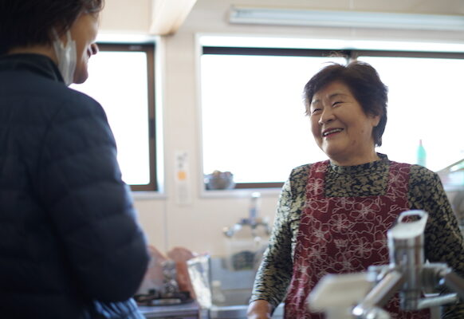
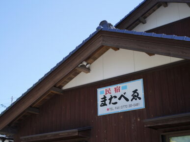
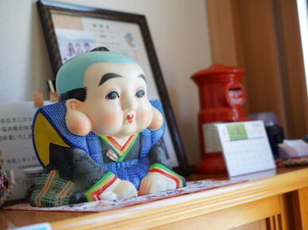

創業53年、家族経営の小さな民宿。
女将・良江と、これからの代と。
福井県三方郡美浜町日向。日向湖と若狭湾の背中合わせの漁村集落に、またべゑは静かに建っています。創業は昭和48年4月18日、2026年で53年を迎える、全5部屋の家族経営の小さな民宿です。
「一度行ったらまた行きたくなる宿」を合言葉に、半世紀あまり、漁師町の暮らしと旅の方をつないできました。

女将の良江は、隣町から親御さんの紹介で20歳のときに日向へ嫁ぎました。それまでは京都の電気屋さんでお手伝いをしていて、ご飯の炊き方も知らない若さでした。
はじめて見た日向の漁師町は、言葉づかいの荒々しさに驚いたといいます。船から丘へ、丘から船へ、大きな声が往き来する。「日常の会話さえ、喧嘩しているみたいに聞こえた」と、女将は当時を笑いながら振り返ります。
嫁いで間もない頃、またべゑはまだ民宿ではありませんでした。
漁師だったご主人がたくさんの魚を獲り、
釣りに来るお客さんから「泊めてほしい」と頼まれることが続いて、
自然と民宿を始めるようになったのです。
最初は7〜8人しか泊まれない、小さな民宿でした。
少しずつお客様が増えて、そろそろ建て替えようかと話していた17年前。
ご主人は73歳で他界しました。
「人生終わりや」と思ったといいます。
けれど女将は、宿を続けることを選びました。
「市場で魚の仕入れも自分でできる。なにより、常連さんがいてくれるから」と、女将は言います。
常連さんなんて、また来てやと言わんでも来るねん。
大きな儲けじゃなくていい。食べていけるだけの少しの儲けと、お客様との会話とふれあいに支えられているから、生きていける。
— 女将・高橋良江
またべゑの名物・自家製へしこ。
ご主人を亡くしてから、女将が一つひとつ手をかけて仕込みはじめました。
「楽しみながらやっているの」と良江は言います。
発酵された鯖の深い旨み、女将の想いがこもった一品です。

仲間とお客様に支えられて17年。次代の女将として、息子の妻が跡を継ぐことになりました。これからは、母と嫁、ふたりで皆様をお迎えします。
変わるところ、変わらないところ。またべゑのものがたりは、これからも続きます。
※女将のお話は 「美浜においで」インタビュー記事より引用しています。